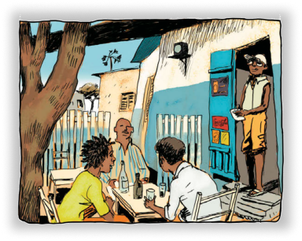
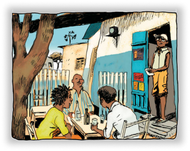
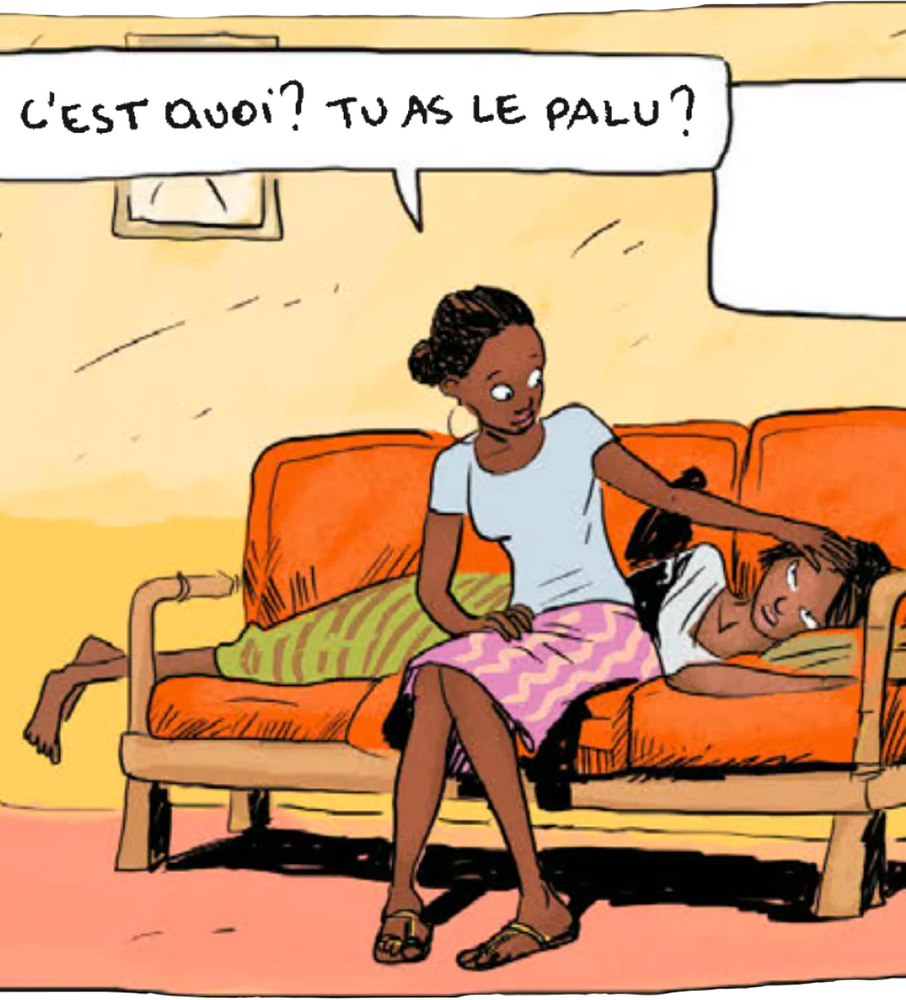
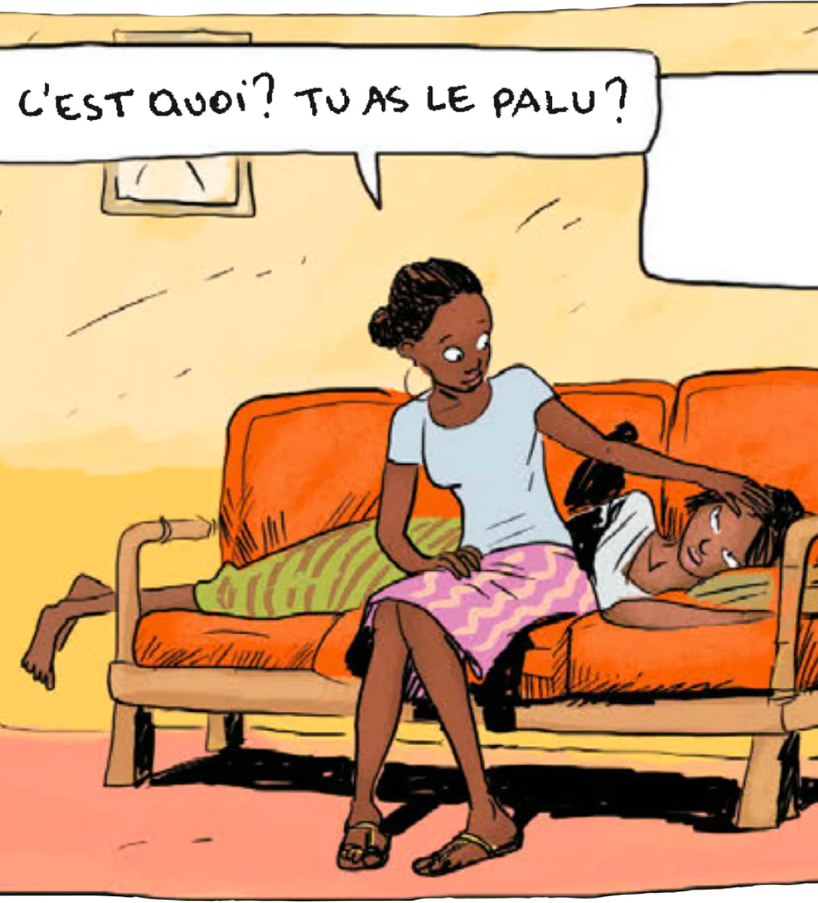

Aya
Elle a 19 ans, est la plus âgée de sa fratrie et n’est pas de nature à faire la fête comme ses deux meilleures amies, Adjoua et Bintou... Elle rêve de faire de grandes études et d’aider les gens.

 



 



Côte d'Ivoire, 1978. Aya, dix-neuf ans, vit à Yopougon, un quartier populaire d'Abidjan. Ça sent le début des vacances mais très vite les choses vont commencer à se gâter...